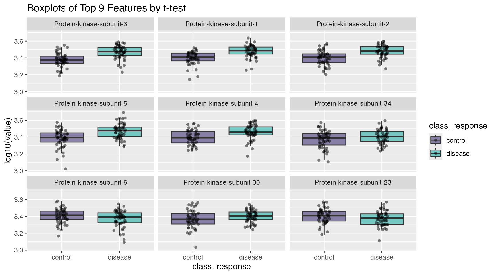

Using Nested Tibbles for Univariate Analysis
t-test-nested-analysis.RmdIntroduction to List-Columns
This vignette utilizes one of the most esoteric concepts in the tidyverse list columns. The tidyverse is based on tidy data, which is based on tables. Tables simplify data analysis by making data easy to use, just like Arabic numerals simplify math by making numbers easy to use. But you may not know that tables can make other things easy to use as well. You can use tables to store models, lists, and other tables in a list column. The table will store the products of your data analysis in an organized way, and you can manipulate the table with other familiar tidyverse tools such as dplyr and purrr. In fact, they are designed work together. This vignette will look at how you can make list columns and use them in a common use-case example.
- A great RStudio webinar from Garrett Grolemund can be found here: how to work with list columns
- As well as a nice tutorial on how list columns incorporate with the purrr package by Jenny Bryan can be found here: purrr and list-columns
Example Analysis
A very common task in proteomics is a univariate analysis of features. This means that each feature is analyzed independently and the exact same statistical test is applied repeatedly over the columns of feature data. This is so common it forms the basis of most preliminary analyses.
As with most analyses, start by pre-processing the data via 3 steps:
- log10-transform
- center to zero mean
- scale to unit variance
# pre-process simulated data
data <- wranglr::simdata
feats <- grep("^seq.", names(data), value = TRUE)
for ( i in feats ) {
data[[i]] <- log10(data[[i]])
}
data <- center_scale(data)Next, initiate a table (tibble) of feature annotations (secondary information). This will be the starting point of the ever-growing analysis “object”:
t_tbl <- attr(data, "Col.Meta") |>
dplyr::mutate(feature = libml:::add_seq(SeqId)) |>
select(feature, SeqId, TargetFullName, EntrezGeneSymbol, UniProt)
head(t_tbl)
#> # A tibble: 6 × 5
#> feature SeqId TargetFullName EntrezGeneSymbol UniProt
#> <chr> <chr> <chr> <chr> <chr>
#> 1 seq.2802.68 2802-68 Protein-kinase-subunit-1 4HG NBXVHJ
#> 2 seq.9251.29 9251-29 Protein-kinase-subunit-2 QKG UL9R2V
#> 3 seq.1942.70 1942-70 Protein-kinase-subunit-3 JHQ8 Z6PS9G
#> 4 seq.5751.80 5751-80 Protein-kinase-subunit-4 NV6Y OBX5GT
#> 5 seq.9608.12 9608-12 Protein-kinase-subunit-5 IHW 72CM6T
#> 6 seq.3459.49 3459-49 Protein-kinase-subunit-6 JP4B OKGFQ2Calculate t-tests
With the above preparation steps in place, iterate over the rows and
add columns as the analysis grows, with a combination of
dplyr::mutate() and purrr::map():
t_tbl <- t_tbl |>
mutate(
t_stat = map(feature, ~ as.formula(paste(.x, "~ class_response")) |>
t.test(data = data)), # fit t-tests
p_value = map_dbl(t_stat, "p.value"), # pull out p-values
fdr = p.adjust(p_value, method = "fdr") # FDR test correction
) |>
arrange(p_value) |> # Re-order by `p-value`
mutate(rank = row_number()) # add ranks column
# each row represents a feature
length(feats)
#> [1] 40
nrow(t_tbl)
#> [1] 40
# the analysis table
t_tbl
#> # A tibble: 40 × 9
#> feature SeqId TargetFullName EntrezGeneSymbol UniProt t_stat p_value fdr rank
#> <chr> <chr> <chr> <chr> <chr> <list> <dbl> <dbl> <int>
#> 1 seq.1942.70 1942-70 Protein-kinase-subuni… JHQ8 Z6PS9G <htest> 6.91e-8 2.76e-6 1
#> 2 seq.2802.68 2802-68 Protein-kinase-subuni… 4HG NBXVHJ <htest> 1.57e-6 2.95e-5 2
#> 3 seq.9251.29 9251-29 Protein-kinase-subuni… QKG UL9R2V <htest> 2.21e-6 2.95e-5 3
#> 4 seq.9608.12 9608-12 Protein-kinase-subuni… IHW 72CM6T <htest> 1.71e-5 1.71e-4 4
#> 5 seq.5751.80 5751-80 Protein-kinase-subuni… NV6Y OBX5GT <htest> 3.63e-4 2.90e-3 5
#> 6 seq.3300.26 3300-26 Protein-kinase-subuni… G6Q HPTSIG <htest> 8.41e-2 4.49e-1 6
#> 7 seq.3459.49 3459-49 Protein-kinase-subuni… JP4B OKGFQ2 <htest> 8.58e-2 4.49e-1 7
#> 8 seq.8142.63 8142-63 Protein-kinase-subuni… XOR 68Z14U <htest> 9.06e-2 4.49e-1 8
#> 9 seq.1130.49 1130-49 Protein-kinase-subuni… X6K IKSPO3 <htest> 1.01e-1 4.49e-1 9
#> 10 seq.3896.5 3896-5 Protein-kinase-subuni… BZFW 584QKS <htest> 1.41e-1 5.00e-1 10
#> # ℹ 30 more rowsDone! We now have a self-contained tibble object with the entire
t-test analysis. The t_stat list-column contains the
“t-tests” and the neighboring columns contain the corresponding
p-values and fdr corrections. The rows (features) are
ordered by p-value and appropriate rank order has been
added.
Plotting in ggplot2
Plotting can be achieved in three basic steps:
- Set up a target map which maps
SeqIds->Targets(protein names)- i.e. for plot titles
- Set up plotting data table
- Plot with ggplot2
Dictionary map of feature -> protein names
target_map <- head(t_tbl, 9L) |> # mapping table
select(feature, Target = TargetFullName) # feature -> Target (& rename)
target_map
#> # A tibble: 9 × 2
#> feature Target
#> <chr> <chr>
#> 1 seq.1942.70 Protein-kinase-subunit-3
#> 2 seq.2802.68 Protein-kinase-subunit-1
#> 3 seq.9251.29 Protein-kinase-subunit-2
#> 4 seq.9608.12 Protein-kinase-subunit-5
#> 5 seq.5751.80 Protein-kinase-subunit-4
#> 6 seq.3300.26 Protein-kinase-subunit-34
#> 7 seq.3459.49 Protein-kinase-subunit-6
#> 8 seq.8142.63 Protein-kinase-subunit-30
#> 9 seq.1130.49 Protein-kinase-subunit-23reshape data into long-format for plotting
plot_tbl <- undo_center_scale(data) |> # log-space; no center-scale
select(class_response, all_of(target_map$feature)) |># top 9 features
pivot_longer(cols = -class_response, names_to = "feature", values_to = "val") |>
left_join(target_map) |>
# order factor levels by 't_tbl' rank to order plots below
mutate(Target = factor(Target, levels = target_map$Target))
#> Joining with `by = join_by(feature)`
plot_tbl
#> # A tibble: 900 × 4
#> class_response feature val Target
#> <chr> <chr> <dbl> <fct>
#> 1 control seq.1942.70 3.34 Protein-kinase-subunit-3
#> 2 control seq.2802.68 3.34 Protein-kinase-subunit-1
#> 3 control seq.9251.29 3.43 Protein-kinase-subunit-2
#> 4 control seq.9608.12 3.43 Protein-kinase-subunit-5
#> 5 control seq.5751.80 3.44 Protein-kinase-subunit-4
#> 6 control seq.3300.26 3.35 Protein-kinase-subunit-34
#> 7 control seq.3459.49 3.36 Protein-kinase-subunit-6
#> 8 control seq.8142.63 3.31 Protein-kinase-subunit-30
#> 9 control seq.1130.49 3.44 Protein-kinase-subunit-23
#> 10 control seq.1942.70 3.40 Protein-kinase-subunit-3
#> # ℹ 890 more rowsplot via ggplot2
plot_tbl |>
ggplot(aes(x = class_response, y = val, fill = class_response)) +
geom_boxplot(alpha = 0.5, outlier.shape = NA) +
scale_fill_manual(values = c("#24135F", "#00A499")) +
geom_jitter(shape = 16, width = 0.1, alpha = 0.5) +
facet_wrap(~ Target) +
ggtitle("Boxplots of Top 9 Features by t-test") +
labs(y = "log10(value)")